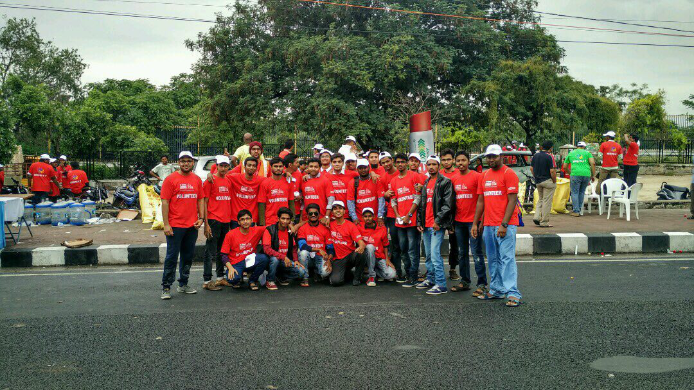
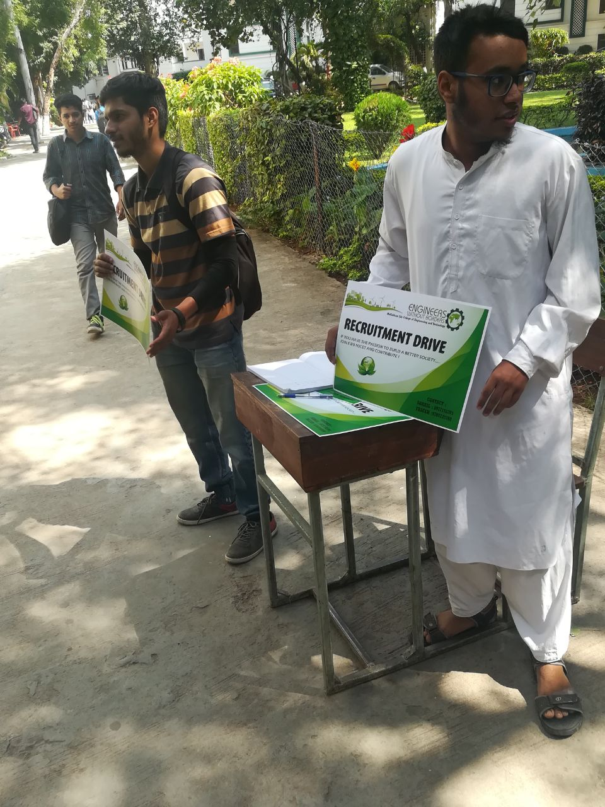
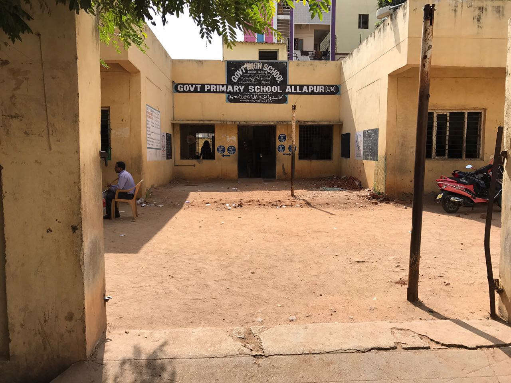

0
Years of impact
Muffakham Jah College of Engineering & Technology
Engineers Without Borders MJCET
Engineering Change. Building Communities.
Student engineers building sustainable solutions for schools, communities, and the environment through real-world projects, field work, and responsible technology.
Field surveys
Clean water
E-learning labs
Sustainable infrastructure


ROClean water systems
28+E-learning centers
HYD / TELANGANACommunity engineering map
0
Student members
0
Activities & projects
0
E-learning centers
0
Households surveyed
Chapter Identity
A student engineering chapter built for practical social impact.
EWB-MJCET works under the Engineers Without Borders movement to use technical knowledge, student leadership, and community partnerships for sustainable development.
Engineering for Social Good
The chapter turns classroom learning into field implementation across water, sanitation, education, clean energy, environment, and rural development.
Documented Work
Annual reports, project audits, needs assessments, and school visits give the chapter a real evidence base for its website.
Community + Technology
From RO plants and drainage systems to computer labs and clean-tech talks, EWB feels like an impact lab inside an engineering college.
Focus Areas
Six domains where engineering becomes useful to people.

Featured Case Study
Erramanzil Government High School
01
02
03
A flagship school infrastructure transformation.
EWB-MJCET helped improve school infrastructure through a complete engineering intervention: clean water, drainage, playground development, wash areas, plantation, drip irrigation, compound wall work, plumbing, welding, painting, computer education, and career counselling.
Problem Mapping
Students and mentors identified gaps in water, sanitation, playground safety, and digital access.
Engineering Response
Multi-branch teams supported civil, mechanical, plumbing, software, and learning infrastructure work.
Outcome
Reports show improved attendance, student engagement, English confidence, and computer learning.
Signature Projects
Real problems. Engineered responses. Visible outcomes.
The project system is designed like a premium portfolio: each card shows what problem was found, what EWB built or studied, and what changed.
Latest Activities
Active programs across environment, education, clean tech, and audits.
Documented Legacy
A timeline that makes the chapter feel established from the first visit.
The EWB reports become a credibility layer: old projects, annual reports, surveys, awards, school work, and recent 2025-26 activity.
Leadership & Team
Faculty guidance, student ownership, and project-based roles.
Dr. Ishrat Meera Mirzana
Faculty mentorship, institutional continuity, and sustainable development orientation.
Mrs. NBV Lakshmi Kumari
Guidance across activity coordination, E-learning visits, and chapter reporting.
Project-led Cabinet
President, Vice President, Secretary, Joint Secretary, Treasurer, project leads, documentation, media, and field teams.
PresidentSecretaryProject LeadsDocumentation
Recruitment
Join a project team, not just a club.
EWB needs students who can survey, design, document, code, coordinate, communicate, and turn rough community problems into practical engineering action.
Become a Member